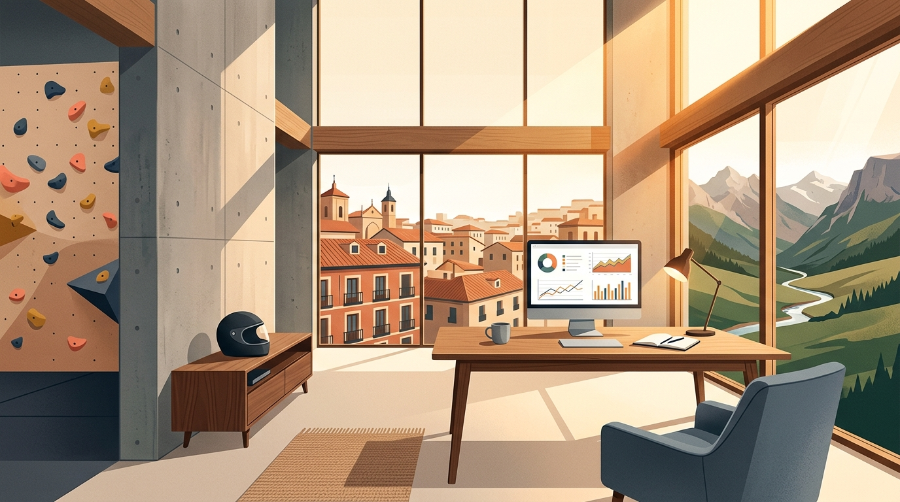

Mastering Stress-Timed Rhythm, Business Flow & Everyday Small Talk.
Great meeting you on Friday, Miguel! From your roots in Vitoria (Basque Country) to your life in Madrid with your girlfriend and your 6-year-old Malinois–Pointer mix, you bring awesome energy to conversation. Whether you're delivering your monthly Business Analyst presentations, discussing Tadao Ando's concrete architecture, or going for Friday indoor climbing, burgers, and beers, this interactive hub has all your tidied notes, pronunciation upgrades, and vocabulary ready to practice.

Your Lesson 01 Strengths & Game Plan
In our "Cats Eat Mice" test, you immediately noticed that I linked "The cats" as a single unit and divided the sentence into two rhythmic beats. Spotting that difference is 50% of the battle!
You naturally keep conversations flowing by asking genuine questions ("Where are you from?", "How is life in Vietnam?", "With a motorbike?") and describing unfamiliar visual images without freezing.
Because Spanish is syllable-timed, you currently pronounce every syllable cleanly. We will practice compressing helper words (might have $\rightarrow$ /ˈmaɪtəv/) while stressing key nouns.
To make your 1–2x/month English presentations effortless—and prepare you for English-first companies—we'll run presentation drills and high-pressure games like Keep Talking & Nobody Explodes.
Miguel's Speaking Roadmap
Your conversational curiosity and listening perception are already strong—our drills will rapidly elevate your connected-speech rhythm, active vocabulary, and monthly presentation confidence!
The "Cats Eat Mice" Stress-Timed Rhythm Lab
In Spanish, every syllable gets almost equal time (syllable-timed). In English, even as each sentence below adds more words, all 4 sentences take almost the exact same amount of time to say! How? Because we stress the 3 anchor words (CATS • EAT • MICE) and "eat" the small grammar words in between.
The becomes a tiny schwa /ðə/ glued directly onto CATS: /ðəˈkæts/.
Base Metronome: Three content words, three steady beats (/ˈkæts ˈiːt ˈmaɪs/).
Linking Rule: Never pause between The and cats. Say thə-CATS as one single word!
Compression Rule: will and the shrink so the main beats stay at the exact same speed.
Lewis's Breakdown from Line 73: Stress CATS, then "eat" the middle syllables: don't say a full "have"—turn it into "of" (might've), soften the /t/ in ea'n, and land cleanly on the MICE!
Miguel's Self-Check Voice Mirror
Test your webcam/headset mic right here! Click Record My Voice, say all 4 "Cats Eat Mice" sentences at the same rhythm pace, and play it back to compare.
From Tadao Ando's "Church of Light" to Tranquil Mountain Spots
In the second half of our lesson, we explored how to describe spaces, materials, emotions, and cultural environments—moving from Japanese minimalist architecture to your favourite mountain spots outside Madrid and life in Hanoi.
This is one of the most famous modern architectural works in Asia—blending Japanese minimalism and love of raw concrete with a monolithic wall pierced by a cross of pure sunlight.
Crucifix /ˈkruː.sɪ.fɪks/
When you said "the sun is coming through... I don't know how to say..." — the cross symbol in a church is a crucifix (or an architectural cross).
Priest / Reverend /priːst/
When you described "the person who comes to explain the Mass" — we call them the priest, reverend, or pastor.
The Congregation /ˌkɒŋ.ɡrɪˈɡeɪ.ʃən/
Instead of "the people who attend to the church", the group gathered for a service is the congregation (sitting on wooden benches called pews).
Concrete & Wood /ˈkɒŋ.kriːt/ • /wʊd/
The walls at the back and on both sides are raw concrete (hormigón), chosen for simplicity so nothing distracts from prayer.
Functional /ˈfʌŋk.ʃən.əl/
Designed purely for its purpose rather than being fancy or elaborate. Great word for both architecture and Business Analyst system design!
Monolithic /ˌmɒn.əˈlɪθ.ɪk/
From monolith (like in 2001: A Space Odyssey): something huge, solid, singular, and unified that dominates the scale of a room. (Also used in tech: monolithic architecture!)
Tranquil /ˈtræŋ.kwɪl/
When you described wanting "mountains with some water, fresh air, and being calmer"—the exact word is tranquil. As we discussed, tranquil isn't dead silence (like an eerie jungle where a snake might hide!); it's peaceful but gently alive with running water, wind brushing through trees, and birds singing (like the eagles over Lewis's mum's garden in the Oxford countryside).
A Spot /spɒt/
In class you asked: "What do you mean by favourite space—favourite spot?" Spot on! In British and American English, spot means both:
1. A favourite place to relax: "I know a tranquil spot by the river."
2. A casual restaurant/bar: "Did you try that new chicken or burger spot after climbing?"
Hectic & Hyper-Alert
When contrasting Madrid with the mountains, remember two key upgrades:
• Use stressful or hectic for noisy city traffic (distressing means emotionally traumatic/upsetting).
• Say "People ARE driving crazy" (in English, people is always plural—never "the people is"!).
Why Vietnam Feels Like One National Family
When you asked Lewis about his life in downtown Hanoi (after leaving historic building restoration in Oxford/UK post-COVID), he shared how Vietnamese uses family members as everyday pronouns to build instant rapport (/ræˈpɔː/):
"Keep Talking and Nobody Explodes"
Why do we play this game in future lessons? Because it is asymmetrical (/ˌeɪ.sɪˈmet.rɪ.kəl/): one person sees the ticking bomb, the other has the English manual, and neither can see the other's screen! You have to stay calm under pressure and describe abstract shapes (like a trident) and sequences in descending order.
Business Analyst Monthly Presentation & "Bottleneck" Studio
You mentioned in class: "Once, twice a month I have to present in a meeting where I have to explain what I'm doing or what I have done during the month... and in the future I'd like the possibility of working at a company where the main language is English without any problem." Below is our deep dive into bottlenecks plus an interactive 4-step monthly presentation builder!
What is a "Bottleneck" (/ˈbɒt.əl.nek/) at Work?
In Spanish, cuello de botella often sounds like something is 100% blocked. In English business & operations, a bottleneck is specifically a department, stage, or resource that gets narrower and cannot keep up with the pace or volume of the rest of the business:
Operations and Accounts are moving fast, but Marketing is overloaded and can't keep up with the rest of the business.
Welding (/ˈwel.dɪŋ/ joining metal) is producing at high volume, but polishing (cleaning the product) can't keep up.
Having plenty of clients, equipment, and space, but not being able to recruit, train, and onboard staff fast enough.
Framing Your Update
Click any phrase to load it into your monthly script below:
What I Did & Am Doing
Clean contrast between Present Perfect & Continuous:
Flagging Bottlenecks
Using your exact idea from Line 120 in executive English:
Closing the Presentation
Invite questions with total confidence:
"In today's monthly sync, I will walk you through what we accomplished this month and our current priorities. Over the past month, we have finalized the core requirements, and right now I am focusing on mapping out the next workflow. Overall, there are no major bottlenecks right now; our team is quite dynamic, so whenever a minor bottleneck arises, we quickly adapt and find a workaround. Moving into next month, our main priority is rolling out the next phase—I would be happy to take any questions or feedback."
"What You Said" $\rightarrow$ Natural Native Upgrades
Here are 10 exact moments from our conversation where a small tweak in word choice, preposition, or pronunciation turns a Spanish-influenced phrasing into effortless British/International English. Click any speaker icon to hear the natural upgrade!
Lesson 01 Vocabulary to Learn & Master
Every word Lewis taught you in class (gathering, bottleneck, asymmetrical, monolithic, functional, congregation, spot, tranquil) plus key Business Analyst, Architecture, and Lifestyle terms from our chat.
Interactive 3D Vocabulary Flashcards
Click the card (or press Space) to flip between the term/context and its full definition + example from our conversation.
A gathering
/ˈɡæð.ər.ɪŋ/
🇪🇸 Hint: Reunión informal / quedada con amigos o compañeros
Miguel's Lesson 01 Interactive Challenge
Let's test the words and rhythm secrets from our conversation! Score 7/8 or higher to launch the celebration confetti.